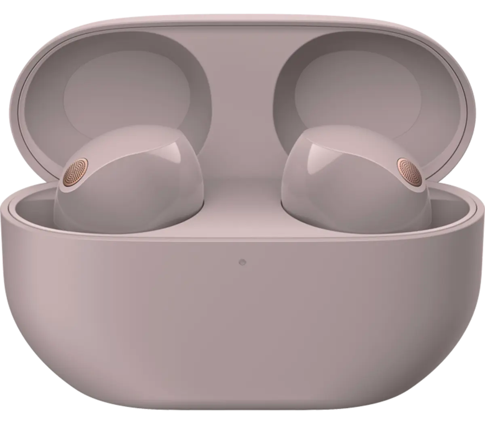

Epsilon 3: 2 Select listening Options
Epslion 3's new product line has two selection options: An over the ear headpone dubbed Epslion 3-1.
We are also introducing a sibling to the over the ear option in Epsilon 3-2.
Epsilon 3-2 provides a similar listening experience from an in ear headphone option for listeners who are more active.
Scroll left for a look at Epsilon 3-2. Scroll down for a look at how the Epsilon Product line might look on you!

Epsilon 3 Listen in Style
Click through the slideshow below for looks at Epsilon 3-1 in use!
If you would like more information on the different features between epsilon 3-1 and 3-2 click below.